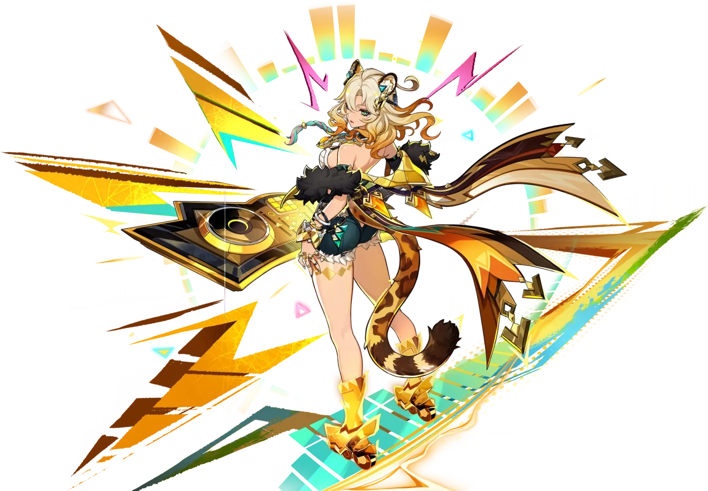

Arconte Hydro:

Furina
Furina es el mejor personaje suport del juego con sus estadidisticas y con su set se vuelve el segundo mejor personaje Hydro del juego.
Historia
Orígenes:
Arconte Hydro: Furina es la diosa del elemento Hydro en Fontaine, lo que la convierte en una figura central en la narrativa de esta región.
Su papel está profundamente ligado a la cultura y las tradiciones de Fontaine.
Personalidad:
Es un personaje apasionado y teatral, que encarna la esencia de la cultura de Fontaine. Su personalidad refleja la pasión y el drama que caracterizan a esta nación.Habilidades en Combate:
Elemento Hydro: Furina controla el elemento Hydro y utiliza una espada como arma. Sus habilidades se centran en el sistema Arkhe, que le permite cambiar entre dos alineaciones: Pneuma y Ousia.Pneuma: Se centra en la curación y el apoyo al equipo.
Ousia: Inflige daño Hydro y mejora su HP máximo para aumentar el daño.
Habilidad Elemental: Solitario de salón.
Ráfaga Elemental: Que la gente se regocije.
Mejor equipo:
- Kaedhara Kazuha (Apoyo)
- Xilonen (Apoyo) 
- Neuvillette (DPS)

Clic en la imagen.
Clic en la imagen.